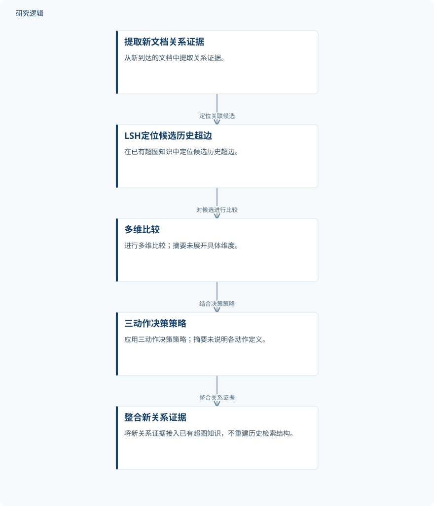

摘要解读
HyperRAG-IHM：面向语料扩展的超图检索增强生成增量超边维护
HyperRAG-IHM: Incremental Hyperedge Maintenance for Hypergraph RAG under Corpus Expansion
解读更新 2026-10-26 10:54 · 依据公开摘要整理，未核验全文细节
知识库持续扩充时，结构化RAG是否必须重建整套检索结构？HyperRAG-IHM尝试通过增量维护超边接入新知识，其阅读价值在于考察：不重建历史结构，能否仍保持与全量重建相当的回答质量。
文章目录
语料不断增加，检索结构如何更新
超图方法将外部知识组织为多实体关系结构，为大语言模型生成有据可依的回答提供支持。但摘要指出，现有结构化RAG系统通常以静态语料构建为前提，新文档到来后，需要针对扩充后的语料重建检索结构。本文关注的正是知识持续进入时的结构更新问题，而非仅讨论初次建库。
从候选定位到增量超边维护
HyperRAG-IHM从新文档中提取关系证据，将其与已有超图知识关联，在不重建历史检索结构的情况下纳入新知识。摘要明确给出的处理链条是：使用LSH定位候选历史超边，再通过多维比较和三动作决策策略整合新的关系证据。
这里的方法重点是维护已有关系结构，而不是对扩充后的全部语料重新构建。摘要没有展开多维比较的具体维度，也没有说明三种动作各自的定义，因此不能仅凭摘要补出完整的更新规则。
依据摘要整理的增量维护流程


仅概括摘要明确描述的方法关系，不代表论文原图，也不补充比较维度或决策动作的具体定义。
下载 SVG图示关系说明
实线表示相邻阶段的信息流，虚线表示跨阶段联系或反馈。
提取新文档关系证据 → LSH定位候选历史超边：定位关联候选；LSH定位候选历史超边 → 多维比较：对候选进行比较；多维比较 → 三动作决策策略：结合决策策略；三动作决策策略 → 整合新关系证据：整合关系证据
回答质量与全量重建相当或更好
摘要报告，在5D评分和8D成对评估下，HyperRAG-IHM的回答质量与全量重建相当或更好。这一结果支持的结论是：在作者报告的评估条件下，增量维护能够在避免整体重建的同时保持回答质量；不能据此推断其在所有数据与任务上都优于重建。
作者还报告，该框架在消融、结构行为、跨数据集及跨回答模型分析中保持稳健。摘要未给出各项分析的具体结果，因此目前只能概括这一总体发现，不能进一步排列不同设置的表现或解释差异来源。
摘要尚不能界定验证边界
本解读仅依据完整摘要。数据集规模、样本构成、语料扩充方式、比较系统及回答模型的具体范围均未在摘要中交代；评分维度、评估流程和差异的统计证据也无法判断。这些信息未在摘要中报告，不代表论文没有开展相关工作。
此外，避免全量重建不等于已经证明具体的时间或资源收益。摘要没有提供更新耗时、存储开销或加速幅度，因此不宜将结构维护方式的变化直接写成已量化的效率提升。
阅读启发：关注知识更新，而非只看建库
阅读启发：对于持续积累文档的智能运维知识库，可以关注“新关系如何接入历史知识”这一问题，但不能将本文结果直接视为运维场景的验证。进一步阅读时，值得核对三动作策略如何处理新旧证据，以及跨数据集、跨回答模型的稳健性究竟覆盖哪些条件。
以上为本站阅读启发与建议，不是论文已验证的结论。